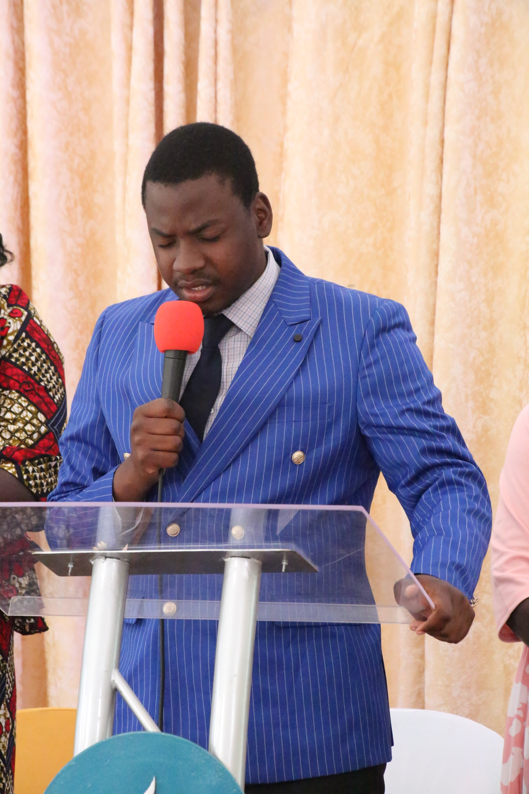

SERMONS
Pastor Leone stated preaching the gospel when he was only 13 years old. He is currently and assistant chaplain at Merryland high school in Entebbe .He conducts evangelistics campaigns, Virtual online sermon, camp meeting, week of prayers and many more. You are free to invite Pastor Leone at your Local church, he will surely be willing to come.

PRAYER
One song writer wrote a song and said if there was a time were we needed the Lord sure we need him now. There are Battles that need to be fought spiritually. Prayer is a tool given to us by heaven to keep in touch with God we need to prayer. Divine intervention is unavoidable in this world of sin. We need to pray for comfort, peace,patience, forgiveness and long sufferingCOUNSELLING
 We live in a world were people are overwhelmed with the stresses of this life
The economic ,environmental and social changes have affected the lives of people in varies ways. People have lost heir values and morals, no one can be trsuted. Friends betray us, spouces are unfaithfal, children are disobedient, many people are dying
It is in the midst of all these calamities the people end up being depressed. Well Pastor Leone offers counselling sessions in a case when you want someone to talk to you
He gives both Biblical and also social advice
We live in a world were people are overwhelmed with the stresses of this life
The economic ,environmental and social changes have affected the lives of people in varies ways. People have lost heir values and morals, no one can be trsuted. Friends betray us, spouces are unfaithfal, children are disobedient, many people are dying
It is in the midst of all these calamities the people end up being depressed. Well Pastor Leone offers counselling sessions in a case when you want someone to talk to you
He gives both Biblical and also social advice